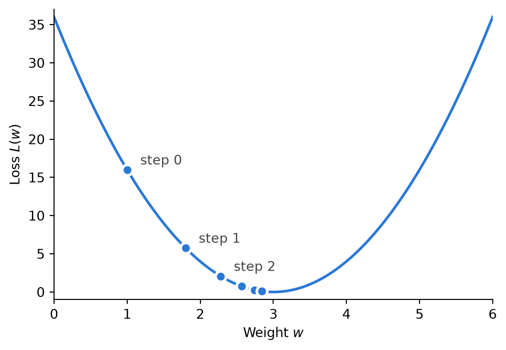

46 AI: Training
In the last two chapters you set every weight and threshold yourself. You moved a slider, watched what happened, and moved it again until the network did what you wanted. That works for a network with ten parameters. It does not work for one with a million, and the language models behind AI assistants have hundreds of billions. Nobody sets those by hand. Nobody even knows what most of them should be. Instead, the network finds its own weights from examples, in a process called training. This chapter explains how. It turns out to be the same thing you did with the sliders, made systematic: change a weight a little, see whether the answer got better, and keep going in the direction that helps.
Learning from examples
A neural network is trained using training data: a large number of inputs, each paired with the output you want for it. For a network that recognizes splice sites, each input is a short DNA sequence and each desired output is 1 if the sequence contains a splice site and 0 if it does not. For a network that predicts how strongly a gene is expressed from its promoter sequence, the desired output is the measured expression level. The desired output is often called the target, or the label.
At the start the weights are set to small random numbers, so the network’s outputs are nonsense. Training then repeats three things many times. It runs the network on some examples and compares its outputs with the targets. It works out, for every weight, whether making that weight a little bigger or a little smaller would bring the outputs closer to the targets. And it changes every weight a little in the helpful direction. After enough rounds, the weights settle on values that make the network do the job.
Measuring how wrong: the loss
To change weights in a direction that makes the network predictions less wrong, we need a way to measure how wrong the network is. For a single example, the error is the difference between the network’s output \(y\) and the target \(t\). Training uses the square of that difference, \((y - t)^2\). Squaring makes every error positive, so an output that is too high and one that is too low both count as wrong, and it makes large errors count much more than small ones: an error of 2 counts 4, an error of 10 counts 100. Averaged over all the examples, this number is called the loss. A loss of 0 means the network gets every example exactly right. The bigger the loss, the worse it does. Other kinds of loss are used for other kinds of output, but they all work the same way: one number that gets smaller as the network gets better.
For demonstration, lets try this with a “network” that is just a single neuron with one input \(x\) and one weight \(w\). To keep it simple we assume the threshold is so small that we can ignore both that and the activation function (Figure 46.1). In this simplest possible case, the output is just \(y = wx\). To make it even simpler, our training data is just a single example: input \(x = 2\), target \(t = 6\). You can see at once that the right weight is \(w = 3\), because \(3 \times 2 = 6\). The training algorithm cannot see that. All it can do is try a weight and compute the loss:
\[ L(w) = (y - t)^2 = (2w - 6)^2 \tag{46.1}\]
With \(w = 1\) the output is 2 and the loss is \((2 - 6)^2 = 16\). With \(w = 2\) the output is 4 and the loss is 4. With \(w = 3\) the loss is 0. Computed for every \(w\), the loss traces out the curve in Figure 46.2 and goal is to find the \(w\) that puts the loss at the bottom of that curve.
Walking downhill: gradient descent
With one weight you could simply try a lot of different values of \(w\) and pick the best. With a million weights that is of cause hopeless: trying just ten values for each would mean more combinations than there are atoms in the universe. The gradient descent training algorithm does not know what the curve looks like. All it cares about is which direction is downhill from where it is now. The steeper the downhill slope (gradient) the better. The slope of the loss curve at a given \(w\) says how much the loss changes when \(w\) is nudged a little. At \(w = 1\) the loss is \(16\). At \(w = 1.01\) the output is \(2.02\) so the loss is \((2.02 - 6)^2 = 15.8404\). So from \(w = 1\) to \(w = 1.01\), the loss went down by \(0.1596\), so the slope is \(-0.1596 / 0.01 = 15.96\).
Differentiating our simple loss function in Equation 46.1, gives the slope as a function of \(w\): \(8w - 24\). At \(w = 1\) that gives \(-16\) agreeing with the \(15.96\) computed above. Knowing the slope, the step downhill is
\[ w_{\text{new}} = w - \eta \times \text{slope} \]
where \(\eta\) (the Greek letter eta) is the learning rate, a small number that sets how big each step is. The minus sign is what makes the step go downhill: a negative slope makes \(w\) bigger, a positive slope makes it smaller. And because the step is proportional to the slope, the steps automatically get shorter as the ground flattens out near the bottom.
With \(\eta = 0.05\) and a start at \(w = 1\), the first step gives \(w = 1 - 0.05 \times (-16) = 1.8\). At \(w = 1.8\) the slope is \(8 \times 1.8 - 24 = -9.6\), and the next step gives \(w = 1.8 + 0.48 = 2.28\). You can see the steps as dots in Figure 46.2. Here is the same thing as a small Python program. Before you run it, predict roughly where \(w\) ends up after ten steps.
x = 2 # the input of our single training example
target = 6 # the output we want for it
w = 1 # a starting guess for the weight
learning_rate = 0.05
print("{:<6}{:<10}{:<10}".format('Step', 'Weight', 'Loss'))
for step in range(15):
y = w * x # run the network
loss = (y - target) ** 2 # how wrong is it?
slope = 2 * (y - target) * x # which way is downhill? (this is 8w - 24)
print("{:<6}{:<10f}{:<20f}".format(step, w, loss))
w = w - learning_rate * slope # take a step downhillStep Weight Loss
0 1.000000 16.000000
1 1.800000 5.760000
2 2.280000 2.073600
3 2.568000 0.746496
4 2.740800 0.268739
5 2.844480 0.096746
6 2.906688 0.034829
7 2.944013 0.012538
8 2.966408 0.004514
9 2.979845 0.001625
10 2.987907 0.000585
11 2.992744 0.000211
12 2.995646 0.000076
13 2.997388 0.000027
14 2.998433 0.000010 The learning rate matters. If it is too small, training takes too long. If it is too large, and each step overshoots and lands on the other side of the valley, possibly even higher up than where it started.
In a real network the loss depends on all the weights, but the slope is still measured separately for each one. I.e., how does the loss change when one weight is nudged and all others remain the same. The list of all these slopes is the gradient. Each step of gradient descent moves every weight a little, each in its own downhill direction. Even in a landscape of million directions, this approach would still move the loss downhill. However, for a network with a billion weights, changing each weight separately would require a billion nudges just to take a single step, and since training requires millions of steps - well you can do the math. Training large networks became possible only because (Rumelhart et al., 1986) came up with a much faster way to get all the slopes at once. The algorithm is called backpropagation
Backpropagation
Backpropagation finds every slope in a single backward pass through the network, which costs about as much as running the network once. Take a network with two neurons in a chain, as in Figure 46.3. To keep the arithmetic simple are again assume are so small that we do not have to take them or the activation function into account. The input \(x\) goes to a hidden neuron that computes \(h = w_1 x\). \(h\) then goes to an output neuron that computes \(y = w_2 h\).
The “forward pass” is just running the network like you have done many times already. If \(x = 1\), \(w_1 = 2\), \(w_2 = 1\) and the target is \(t = 4\), then \(h = 2 \times 1 = 2\), which in turn makes \(y = 1 \times 2 = 2\), producing a loss of \((2 - 4)^2 = 4\).
The “backward pass” starts from the end and works its way backwards, one neuron at a time. At every node, it evaluates how much the loss would change if that neuron’s value was nudged. The idea is to “propagate” the slope from the loss “backwards” across the hidden neurons, in proportion to the weight that connects them. Since the loss is \((y - t)^2\), the slope with respect to \(y\) is \(2(y - t) = 2 \times (2 - 4) = -4\). This means that if \(y\) went up by a little, the loss would go down by four times as much. That makes sense since the output \(y\) is lower than the target \(t\). Working backwards, we get to the \(w_2\) weight. Since \(y = w_2 h\), nudging \(w_2\) changes \(y\) by \(h\) times as much, so the slope for \(w_2\) is the slope for \(y\) times \(h\): \(-4 \times 2 = -8\). Nudging \(h\) changes \(y\) by \(w_2\) times as much, so the slope for \(h\) is \(-4 \times w_2 = -4 \times 1 = -4\). Finally, the weight \(w_1\). Since \(h = w_1 x\), nudging \(w_1\) changes \(h\) by \(x\) times as much, so the slope for \(w_1\) is \(-4 \times x = -4 \times 1 = -4\). Figure 46.4 collects the whole backward pass.
The slopes for both \(w_1\) and \(w_2\) are negative, which means gradient descent will make both weights larger. \(w_2\), has the steeper slope and will grow fastest. In a network with many layers, the slopes flow backward layer by layer, each layer doing a little local multiplication, until every weight has its slope. In mathematics this way of combining slopes along a chain is called the chain rule.
With activation functions, the slope of the activation function enters as an additional factor at every neuron. That is why a step function discussed in ?sec-nn-activation does not work well in training. Its slope is 0 everywhere (except for the jump), and multiplying by 0 stops the chain propagating slope backwards. If the slope is 0, nudging the parameters in the remaining part of the network will not affect the loss. Without this connection between loss and parameter values, we cannot train the network.
The sigmoid activation function has non-zero slope, but across many multiplications across a large network, the tiny slopes far from 0 make the numbers become near-zero anyway. ReLU works best in training because its slope is 1 wherever the neuron is active, so the slope propagates undiminished. Its slope is 0 where it is silent, so even with ReLU, a node will stop learning if it is silent for every example in the training set.
Training in practice
The network usually doesn’t run on all the training data at every step. Instead, it computes the loss and the slopes from just a random uses a small random handful of examples, called a batch, and. The step is a little less accurate, but there are far more of them for the same amount of computing, and the noise from the random batches even helps the network avoid getting stuck. One pass through all the training data is called an epoch, and training usually runs for many epochs.
The loss function of a real network isn’t a neat bowl like the one in Figure 46.2, but a landscape with countless hills, ridges, and valleys. Gradient descent finds only the bottom of the valley it happens to walk into, which may not be the deepest. For large networks, this matters less than you might fear: there are so many directions to move that a true dead end is rare, and many different sets of weights work about equally well.
The most important practical point is how to tell whether training worked. A network with enough parameters can drive its training-data loss almost to zero by memorizing it, like a student memorizing the answers to last year’s exam without understanding the subject. This is called overfitting, and a network that has overfitted does well on its training examples and badly on everything else. The only way to find out is to test the network on examples it has never seen. Before training starts, part of the data is therefore set aside as a test set, and the network is judged on that alone. It is the same principle you have used with code all term: the program is not right because it looks right, or because it works on the example you wrote it for. It is right when it passes tests it was not built to pass.
Even a network that does well on a test set has only learned what was in the data, and it learns whatever reduces the loss, including shortcuts nobody intended. A network trained to detect pneumonia in chest X-rays from several hospitals turned out to rely partly on features that identified which hospital an image came from, since the hospitals differed in how common pneumonia was among their patients. It generally did worse on X-rays from hospitals it had not been trained on (Zech et al., 2018). The loss rewards getting the training answers right, not getting them right for the right reasons.
Exercise 46-1
Continue gradient descent for the one-neuron network by hand, with \(x = 2\), \(t = 6\) and \(\eta = 0.05\). You have reached \(w = 2.28\). Work out each answer on paper before you open it.
Exercise 46-2
Type the training program from ?sec-train-descent into a file or a notebook cell (do not copy and paste it) and run it to check that you get the same output. Then change the learning rate. For each change, predict what will happen to \(w\) before you run the program.
Exercise 46-3
Do the forward and backward pass for the two-neuron chain from ?sec-train-backprop by hand, but now with \(x = 2\), \(w_1 = 1\), \(w_2 = 3\) and target \(t = 5\).